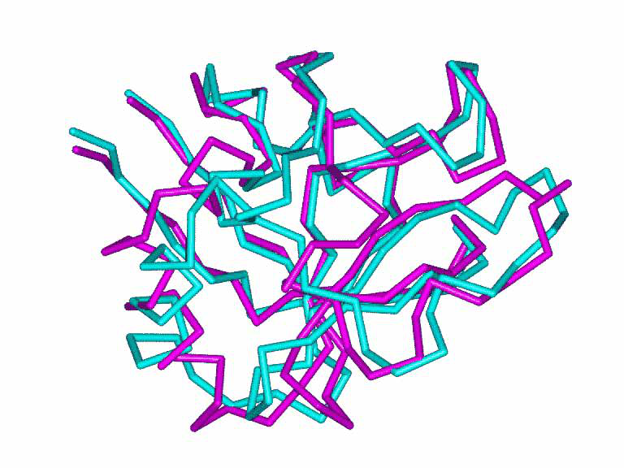
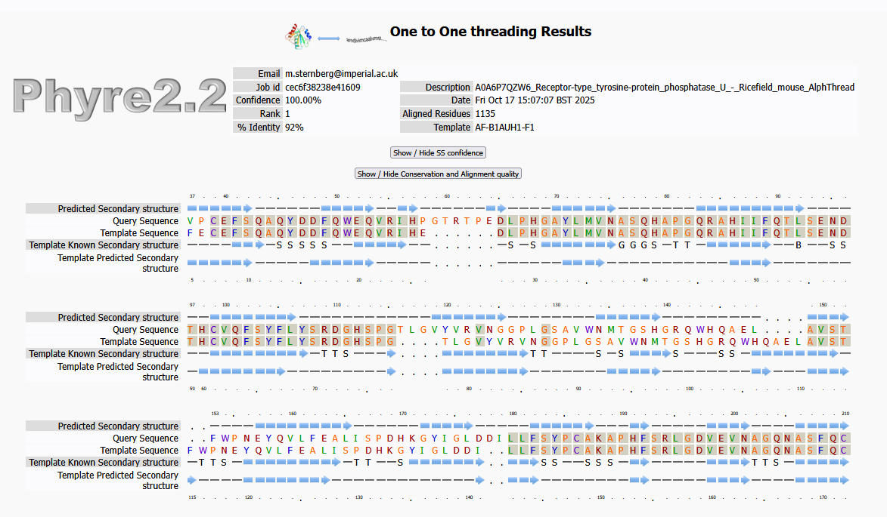
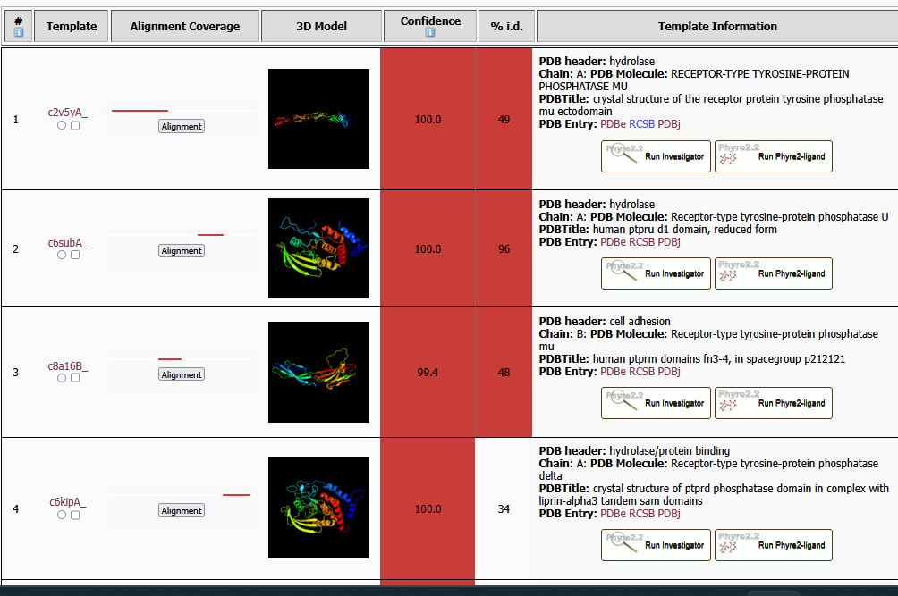
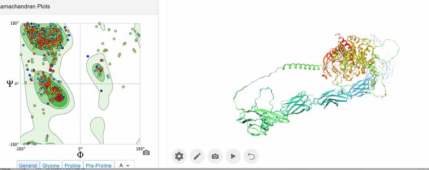

Homology Modeling and Threading
In 1986, Chothia and Lesk published a landmark analysis showing that protein structure is conserved far more than sequence (Chothia and Lesk 1986). Proteins sharing just 25% sequence identity still share the same overall fold. This observation suggested that if you could find a structural template for your protein of interest, you could build a reasonable model even when sequences had diverged beyond recognition by simple alignment. The logic was straightforward: evolution acts on function, function depends on structure, and structure changes slowly. Two proteins descended from a common ancestor may have accumulated so many mutations that their sequences bear little resemblance to one another, yet their backbones overlay with root-mean-square deviations under two angstroms.
This chapter develops the computational machinery for exploiting that evolutionary conservation. We begin with the problem of finding a suitable template structure in the Protein Data Bank, proceed through methods for aligning a query sequence onto that template even when sequence similarity is marginal, and then address the mechanical steps of constructing a three-dimensional model: copying the backbone, rebuilding loops, placing side chains, and refining clashes. We treat two approaches in detail, the profile-based homology pipeline exemplified by Phyre2 and the fragment-assembly method of Rosetta, before closing with methods for estimating how much trust to place in the resulting coordinates.
Template Identification
The first and most consequential decision in homology modeling is the choice of template. A poor template propagates systematic error through every downstream step; no amount of loop modeling or side-chain optimization can rescue a model built on the wrong fold. The reliability of a homology model correlates strongly with the sequence identity between query and template, and practitioners have long organized their expectations around three regimes.
Above 30% sequence identity over a substantial aligned length, the template almost certainly shares the correct fold with the query, and the resulting model will have a backbone accurate to within about 1.5 Å RMSD from the true structure.1 Between 20% and 30% identity lies what Rost called the “twilight zone” (Rost 1997): some fraction of sequence matches at this level reflect genuine homology while others are chance similarities between unrelated proteins. Below 20% (the “midnight zone”), sequence identity alone cannot distinguish homologs from non-homologs, and more powerful methods are required.
1 This threshold assumes an alignment length of at least 80 residues. Short alignments with high identity can be misleading.
The simplest approach to template identification is a BLAST search of the query sequence against sequences extracted from the Protein Data Bank (Altschul et al. 1997). BLAST works well in the safe homology regime above 30% identity because its local alignment heuristic captures the strongest pairwise similarities efficiently. But BLAST compares single sequences and discards the evolutionary information encoded in related sequences. For targets in the twilight zone, this discarded information is precisely what we need.
Profile-profile comparison methods recover this lost signal by representing both the query and each potential template not as single sequences but as position-specific scoring matrices or hidden Markov models built from multiple sequence alignments of their respective protein families. The HHpred server and its underlying algorithm HHsearch exemplify this approach (Söding 2005; Remmert et al. 2012).2 Given a query sequence, the pipeline first builds a multiple sequence alignment of homologs detected by iterative PSI-BLAST or HHblits searches, converts this alignment into a profile HMM, and then scores that HMM against a database of profile HMMs precomputed from every chain in the PDB.
2 HHsearch compares query and template as profile HMMs, treating match, insert, and delete states explicitly.
The score for aligning two profile HMMs is a log-odds statistic. At each aligned column pair, the method computes a score reflecting how well the amino acid distributions in the query column and the template column agree, relative to a null model of chance agreement. Specifically, for query column \(i\) with amino acid frequencies \(q_i(a)\) and template column \(j\) with frequencies \(t_j(a)\), the column match score takes the form \[S(i,j) = \log \frac{\sum_a q_i(a)\, t_j(a)}{p(a)} \label{eq:hhsearch-score}\] where \(p(a)\) is the background frequency of amino acid \(a\). This formulation rewards column pairs that share similar amino acid preferences and penalizes matches between dissimilar profiles. The dynamic programming alignment of query and template HMMs then maximizes the total score summed over all aligned column pairs, with affine gap penalties accounting for insertions and deletions.
Profile-profile methods routinely detect homology at sequence identities of 15–20%, well into the twilight zone where BLAST fails. The reason is straightforward: a single residue at position \(i\) may be glutamate, but the profile for that position reveals that the entire column tolerates any negatively charged or polar residue. A template whose corresponding position shows a similar preference for negative charge registers a high column score even if the specific residues differ. The method is reading the evolutionary constraints rather than the particular mutations that happened to occur along one lineage.

The distinction between homology detection and fold recognition deserves explicit attention. When the identified template is a genuine evolutionary homolog of the query (meaning both descend from a common ancestral protein), we speak of homology modeling in the strict sense. The template and query share not just a fold but an evolutionary history, and we expect that functionally important residues (active sites, binding interfaces) will be conserved in both position and identity. When the template is merely a structural analog (a protein that has converged on the same fold through independent evolutionary paths), we are performing fold recognition or threading rather than homology modeling. The distinction matters because analogous structures may share a backbone topology yet differ substantially in their loop conformations, surface features, and functional sites. Models built from analogs require more caution in interpretation, particularly around functional inferences.
Threading and Fold Recognition
Threading addresses the inverse folding problem by asking which fold, from a library of known three-dimensional structures, best accommodates the query sequence. The intellectual framework differs from sequence-based homology detection in a fundamental way. Rather than asking whether two sequences are similar enough to share a fold, threading asks directly whether a sequence is energetically compatible with a particular structure. This reframing opens the door to detecting remote structural relationships that leave no detectable trace in sequence space.
The procedure works as follows. Take each known fold from a structural library and place (thread) the query sequence onto its backbone coordinates, one residue per structural position. For each such threading, evaluate a pseudo-energy function that scores how well the sequence fits the structure. The fold receiving the best score is the predicted template. The concept is elegant, but the details demand care.
The pseudo-energy function combines several terms designed to capture the physics and statistics of protein structure without the computational expense of full molecular mechanics. A typical threading potential includes pairwise contact terms, solvation terms, and secondary structure compatibility terms.
The pairwise contact potential assigns an energy to each pair of residues that are in spatial proximity (typically C\(_\beta\)–C\(_\beta\) distance below some threshold, often 7–8 Å) when the query residue at position \(i\) and the query residue at position \(j\) are threaded onto template positions that place them in contact: \[E_{\text{contact}} = \sum_{i < j} \Delta(d_{ij} < d_c)\, e(a_i, a_j) \label{eq:contact-potential}\] where \(\Delta\) is an indicator function, \(d_{ij}\) is the distance between the C\(_\beta\) atoms at template positions corresponding to query residues \(i\) and \(j\), and \(e(a_i, a_j)\) is a statistical potential derived from observed contact frequencies in the PDB.3 Favorable contacts (such as hydrophobic residues packed in the core) yield negative energies; unfavorable contacts (such as burying charged residues) yield positive energies.
3 These potentials are often called Sippl potentials or Miyazawa–Jernigan potentials, depending on the derivation. They represent the log-ratio of observed contact frequencies to those expected under a reference state.
The solvation term captures the propensity of each amino acid type to be found in environments of varying solvent exposure. A residue threaded into a deeply buried position should be hydrophobic; one placed on the surface should be polar or charged. The solvation energy for residue \(i\) threaded onto template position \(k\) is: \[E_{\text{solv}} = \sum_i s(a_i, b_k) \label{eq:solvation}\] where \(b_k\) is the burial level of template position \(k\) (often discretized into bins based on the number of neighboring C\(_\beta\) atoms or accessible surface area) and \(s(a_i, b_k)\) is the solvation potential for amino acid type \(a_i\) at burial level \(b_k\).
The secondary structure agreement term penalizes placing residues with strong helical propensity into strand positions on the template, or vice versa. It requires a secondary structure prediction for the query sequence, which is compared against the known secondary structure assignment of the template.
The frozen approximation is a critical simplifying assumption. Threading methods hold the template backbone fixed and ask only whether the query sequence is compatible with that backbone. No conformational sampling is performed; the backbone coordinates are treated as given. This approximation makes the problem computationally tractable (evaluating the pseudo-energy for a single threading reduces to a sum over residues and residue pairs), but it also limits accuracy when the true structure of the query deviates from the template backbone, as inevitably occurs in loops and at sites of insertions or deletions.
Given the frozen approximation and the form of the scoring function, optimal threading can sometimes be solved by dynamic programming when the energy function decomposes into position-independent terms (solvation and secondary structure) and pairwise terms that respect the sequential order of the template.4 In practice, because the contact potential couples positions that are far apart in sequence, exact optimization is NP-hard, and methods resort to heuristic search: branch-and-bound, Monte Carlo sampling, or iterative relaxation.
4 For strictly sequential threading with only single-body terms, the problem reduces to global sequence-structure alignment and is solved in \(O(nm)\) time. Adding pairwise terms that couple non-adjacent positions makes the general problem NP-hard, and heuristics are required.
GenTHREADER represents one of the earlier successful threading methods deployed at scale (Jones 1999). It combines pair potentials with solvation and secondary structure scores, uses a heuristic alignment algorithm, and trains a neural network to convert raw threading scores into a confidence estimate. The neural network takes as input the threading Z-score (how many standard deviations the best score is above the mean score over a library of decoy threadings), the alignment length, and the sequence identity, and outputs a probability that the predicted fold is correct.

The Phyre approach, which evolved into Phyre2, took a different path. Rather than relying primarily on threading pseudo-energies, Phyre emphasized profile-profile alignment (in the style of HHsearch) for template identification and reserved structural evaluation for validation and ranking. This architectural choice reflected the empirical observation that, with sufficiently deep sequence databases, profile-profile methods could detect homology more reliably than threading pseudo-energies alone. Threading energies remain valuable for proteins with no detectable sequence homologs, but for the majority of soluble protein domains, profile methods suffice.
The Phyre2 Pipeline
Phyre2 integrates template identification, alignment, model building, and confidence estimation into a single automated pipeline that has been one of the most widely used homology modeling servers since its publication (Kelley et al. 2015). Understanding its architecture clarifies the general workflow common to most comparative modeling pipelines, while its specific design choices reflect pragmatic tradeoffs between accuracy and throughput.
The pipeline begins with the query sequence. Phyre2 uses PSI-BLAST to search a large non-redundant sequence database iteratively, building a position-specific scoring matrix that captures the evolutionary profile of the query family. This profile is then converted into a hidden Markov model and compared against a library of HMMs constructed from sequences of known structure in the PDB. The comparison uses a variant of the HMM-HMM alignment algorithm, producing a ranked list of templates with associated alignment scores and estimated probabilities of true homology.

Multiple template modeling allows Phyre2 to handle queries whose domains map onto different templates. When the top-scoring template covers only a portion of the query sequence, additional templates may cover the remaining segments. The pipeline identifies non-overlapping high-confidence template matches and models each segment independently against its respective template before assembling the segments into a composite model. This strategy is particularly important for multi-domain proteins, where each domain may have its closest structural relative in a different PDB entry.
For regions of the query that align to the template, backbone coordinates are copied directly from the template structure after appropriate transformation to account for the alignment. Where the query and template sequences align without insertions or deletions, the backbone geometry is adopted wholesale. Where the template contains an insertion relative to the query, those template residues are deleted. Where the query contains an insertion (residues with no corresponding template positions), loops must be modeled ab initio.
Loop modeling for insertions and deletions is among the most challenging steps. Phyre2 employs a fragment-based approach to loop construction. For a gap of length \(n\) residues bracketed by two anchor residues whose positions are known from the template, the method searches a library of backbone fragments of length \(n+2\) (including the anchors) extracted from high-resolution crystal structures. Candidate fragments are scored based on sequence similarity to the query loop, geometric compatibility with the anchor positions, and absence of steric clashes with the rest of the model. The best-scoring fragment is grafted into the model. For loops longer than about 12 residues, the accuracy of this approach degrades substantially because the conformational space grows exponentially with loop length and the probability of finding a suitable fragment diminishes.5
5 Loop modeling remains an active area of research. Methods range from database searches (as in Phyre2) to kinematic closure algorithms, to full molecular dynamics-based sampling.
Side-chain packing follows backbone construction. Given the modeled backbone, each residue must be assigned a side-chain conformation. Phyre2 draws on rotamer libraries: tabulations of the most frequently observed side-chain dihedral angles (\(\chi_1, \chi_2, \ldots\)) for each amino acid type, stratified by backbone \(\phi\) and \(\psi\) angles. The packing problem is to assign one rotamer from the library to each residue such that the total energy (van der Waals interactions, hydrogen bonds, solvation) is minimized.
The combinatorial explosion of rotamer assignments (if each of \(N\) residues has on average \(k\) rotamers, there are \(k^N\) possible packings) is tamed by the dead-end elimination (DEE) theorem.6 DEE iteratively prunes rotamers that provably cannot participate in the global minimum energy conformation. After DEE reduces the search space, the remaining combinatorial problem is small enough to solve exactly or approximately by tree search. The result is a set of side-chain placements that are sterically compatible with the backbone and with each other.
6 The DEE criterion states: if the best possible energy of rotamer \(r\) at position \(i\) (considering all possible rotamers at all other positions) is worse than the worst possible energy of some alternative rotamer \(s\) at position \(i\), then \(r\) cannot appear in the global minimum energy conformation and can be eliminated.
7 The confidence metric is not a measure of geometric accuracy. A model may have high confidence (correct fold) but still deviate by several angstroms from the true structure, particularly in loop regions and at the surface.
Confidence estimation is the final critical output. Phyre2 reports a confidence score for each aligned region, reflecting the probability that the query and template are genuinely homologous and that the alignment is correct. Confidence above 90% indicates that the fold assignment is almost certainly correct, even if the fine details (loops, side chains) may be approximate. Confidence between 50% and 90% suggests possible homology but warrants caution. Below 50%, the model should be treated as speculative. These confidence scores are derived from the profile-profile alignment scores, calibrated against a benchmark of known true and false positives.7
Rosetta: Fragment Assembly and Energy-Based Modeling
Rosetta approaches structure prediction from a different philosophical starting point. Where homology modeling pipelines like Phyre2 begin with a template and perturb it, Rosetta can build structure from fragments without requiring a single global template (Simons et al. 1997). This makes it applicable in situations where no homologous template exists (the regime of ab initio prediction), and its fragment library and energy function are equally useful for refining homology models and modeling regions that lack template coverage.
The central idea is fragment assembly. The query sequence is divided into overlapping windows of 3 and 9 residues. For each window, Rosetta searches a curated library of high-resolution crystal structures to find short backbone fragments whose local sequence profile matches the query window. The fragments are not required to come from homologous proteins; they are local structural motifs that recur across the entire PDB. A 9-residue fragment captures roughly two turns of helix or a strand-turn-strand motif, while 3-residue fragments provide fine-grained torsion angle adjustments.
The assembly protocol uses Monte Carlo sampling with Metropolis acceptance. Starting from an extended chain or a partially constructed model, the algorithm repeatedly proposes moves: select a random position in the chain, select a random fragment from the precomputed library for that position, and replace the backbone torsion angles (\(\phi\), \(\psi\), \(\omega\)) of the corresponding residues with those from the fragment. The proposed conformation is then scored by an energy function, and the move is accepted or rejected according to the Metropolis criterion: \[P(\text{accept}) = \min\left(1,\; \exp\left(-\frac{E_{\text{new}} - E_{\text{old}}}{k_B T}\right)\right) \label{eq:metropolis}\] At high effective temperature, most moves are accepted and the chain explores conformational space broadly. As the simulation proceeds through stages of decreasing temperature (simulated annealing), the chain becomes trapped in low-energy basins that ideally correspond to the native structure.
The Rosetta energy function is a hybrid of knowledge-based statistical terms and physics-based energy calculations. In the low-resolution centroid stage (where side chains are represented as single pseudo-atoms at the centroid of their heavy atoms), the energy includes:
Ramachandran propensity, scoring each residue’s \(\phi\)/\(\psi\) angles against the observed distribution in high-resolution structures. Residues in disallowed regions of the Ramachandran plot pay a large penalty.
Pairwise distance-dependent potentials between centroids, analogous to threading contact potentials but operating on a continuous distance scale. These capture the tendency of hydrophobic residues to cluster in the core and polar residues to face solvent.
Secondary structure pairing terms that reward strand-strand hydrogen bond patterns consistent with the predicted secondary structure topology.
A radius of gyration term that penalizes overly expanded conformations, biasing the search toward compact globular structures.
A steric clash penalty that prevents backbone and centroid atoms from overlapping.
The high-resolution all-atom refinement stage replaces centroid representations with full atomic detail and introduces a more physically detailed energy function. Side chains are built using rotamer libraries (as in the Phyre2 pipeline), and the energy function now includes explicit terms for hydrogen bond geometry (donor-acceptor distance, angle, and planarity), Lennard-Jones van der Waals interactions between all atom pairs, an implicit solvation term approximating the cost of burying polar groups, a term for the probability of each side-chain rotamer given the local backbone geometry, and electrostatic interactions (often approximated by a distance-dependent dielectric). The refinement protocol performs small perturbations (repacking side chains, minimizing backbone torsions, performing small fragment insertions) and accepts or rejects each perturbation according to the Metropolis criterion with a low effective temperature.
The result of a full Rosetta run is an ensemble of thousands of decoy structures. The lowest-energy decoys are clustered by structural similarity (typically using C\(_\alpha\) RMSD), and the center of the largest cluster is reported as the predicted structure.8 In practice, for proteins under about 100 residues with no homologous template, Rosetta fragment assembly can produce models within 3–6 Å RMSD of the experimental structure. For larger proteins or those with complex topologies, accuracy degrades unless templates or co-evolutionary contact information is incorporated to constrain the search.
8 The logic of clustering: if many independent trajectories converge on similar conformations, those conformations are likely to be energetically favorable and structurally correct. Isolated low-energy decoys may represent kinetic traps rather than the global minimum.
In the context of homology modeling, Rosetta’s fragment library is most useful for modeling regions without template coverage: long loops, terminal extensions, and inserted domains. The homology-based backbone provides the global fold, and Rosetta rebuilds the missing pieces using fragment insertion constrained to maintain connectivity with the template-derived regions. This hybrid approach (template for the core, Rosetta for the gaps) often produces better models than either method alone.
Model Quality Estimation

A model without an accuracy estimate is of limited utility. The user of a homology model needs to know which regions are trustworthy and which are speculative. Is the active-site geometry reliable enough for virtual screening? Are the surface loops positioned accurately enough to interpret mutagenesis data? Quality estimation methods provide per-residue or global scores that answer these questions without requiring the (unknown) experimental structure for comparison.
The Local Distance Difference Test (lDDT)
The local Distance Difference Test (lDDT) evaluates structural accuracy at the local level, avoiding the pitfalls of global superposition-based metrics like RMSD that can be dominated by a single misplaced domain while ignoring correctly modeled regions elsewhere in the structure. The definition is straightforward.
For a given residue \(i\) in the model, consider all residues \(j\) in the reference (experimental) structure whose C\(_\alpha\) atoms lie within 15 Å of residue \(i\)’s C\(_\alpha\). For each such pair \((i,j)\), compute the absolute difference between the interatomic distance in the model and the interatomic distance in the reference. The fraction of these distance differences that fall below a threshold \(\tau\) gives a local accuracy score at that threshold. The lDDT score for residue \(i\) is the average of this fraction over four thresholds: 0.5, 1, 2, and 4 Å (Mariani et al. 2013): \[\text{lDDT}(i) = \frac{1}{4} \sum_{\tau \in \{0.5, 1, 2, 4\}} \frac{1}{|S_i|} \sum_{j \in S_i} \mathbf{1}\left[|d_{ij}^{\text{model}} - d_{ij}^{\text{ref}}| < \tau\right] \label{eq:lddt-metric}\] where \(S_i = \{j : d_{ij}^{\text{ref}} < 15\text{\AA}\}\) is the set of residues within the inclusion radius of residue \(i\) in the reference structure, \(d_{ij}^{\text{model}}\) and \(d_{ij}^{\text{ref}}\) are the distances between residues \(i\) and \(j\) in model and reference respectively, and \(\mathbf{1}[\cdot]\) is the indicator function.9
9 Note that lDDT does not require superposition of model and reference. It is purely distance-based and therefore invariant to rigid-body transformations. This property makes it particularly suitable for multi-domain proteins where domain orientation may differ between model and crystal packing.
The global lDDT score for an entire model is simply the average over all residues. Values above 0.7 indicate a model of reasonable quality; values above 0.9 indicate near-experimental accuracy. The per-residue profile of lDDT identifies which regions of the model are well-determined and which are poorly modeled, providing practical guidance for experimental design: if you need accurate coordinates at the binding site, check whether the binding-site residues have high lDDT.
The multiple thresholds (0.5 through 4 Å) give lDDT sensitivity across a range of accuracy levels. The 4 Å threshold captures whether the overall fold and topology are correct. The 0.5 Å threshold is sensitive to fine details of backbone geometry and side-chain placement. A model with high lDDT at 4 Å but low lDDT at 0.5 Å has the right fold but imprecise local geometry, typical of models in the 25–35% sequence identity range.
QMEANDisCo
QMEANDisCo extends the QMEAN statistical potential framework with distance constraints derived from homologous structures (Studer et al. 2020). QMEAN itself evaluates model quality using a composite scoring function that includes terms for torsion angle normality, pairwise residue-level distance-dependent interactions, solvation energy, and agreement between predicted and observed secondary structure. Each term produces a Z-score indicating how the model compares to high-resolution experimental structures of similar size.
The “DisCo” extension adds consensus-based distance constraints.10 For each residue pair in the model, QMEANDisCo retrieves the corresponding interresidue distances from all available homologous structures in the PDB. The observed distribution of these distances forms an empirical reference. The model’s distance for that pair is scored against this distribution: distances consistent with the consensus receive high scores, while distances deviating from what is observed in homologs are penalized. This approach exploits the same evolutionary conservation that motivates homology modeling itself: if a pairwise distance is conserved across many homologs, the model had better preserve it too.
10 DisCo stands for Distance Constraints, reflecting the use of pairwise distances from multiple template structures as references.
The per-residue QMEANDisCo score ranges from 0 to 1, analogous to lDDT, and the two metrics correlate strongly. The practical advantage of QMEANDisCo is that it does not require the experimental structure of the target. It estimates what lDDT would be, using homolog-derived constraints as a surrogate for the true structure. This makes it an estimator of model quality rather than a measure of model accuracy (the latter requiring ground truth).
Connection to pLDDT in AlphaFold
AlphaFold’s predicted lDDT (pLDDT) represents the logical culmination of model quality estimation integrated directly into the structure prediction network. Rather than building a model first and scoring it afterward, AlphaFold predicts, for each residue, what its lDDT score would be if the predicted structure were compared against the true experimental structure. This predicted confidence is produced by a dedicated head of the neural network, trained alongside the structure module so that the network learns not only to predict structure but also to recognize when its predictions are uncertain.
The pLDDT score inherits the same 0-to-1 scale and per-residue granularity as lDDT. AlphaFold models with pLDDT above 90 are typically accurate to within 1 Å backbone RMSD of the experimental structure; regions with pLDDT between 70 and 90 are modeled with reasonable backbone accuracy but less reliable side-chain placement; and regions below 50 are likely disordered or adopting conformations not captured by the training data. We develop this connection further in Chapter [ch:alphafold], where AlphaFold’s architecture and training procedure are treated in full.
The conceptual arc from external quality estimators like QMEANDisCo to the internally predicted pLDDT reflects a broader trend in computational structural biology: the integration of uncertainty quantification directly into the prediction pipeline, so that every predicted coordinate comes with a calibrated confidence estimate. For the practitioner, this means that the era of building a model and then anxiously wondering whether to trust it is giving way to predictions that explicitly tell you where they are reliable and where they are not.
Practical Considerations
Several practical factors influence the quality of a homology model beyond the algorithmic details discussed above. Template resolution matters: a template solved at 1.5 Å resolution provides more accurate backbone and side-chain coordinates than one at 3.0 Å, and this accuracy propagates directly into the model. When multiple templates are available at similar sequence identities, choosing the highest-resolution structure is almost always preferable.
The treatment of crystal contacts and biological assemblies also deserves attention. Structures in the PDB often represent a single chain from a biological oligomer, or they may contain crystal-packing artifacts (contacts between molecules in adjacent unit cells that do not occur in solution). A model built from such a template inherits any distortions caused by crystal packing. Checking the biological assembly annotation and modeling the relevant oligomeric state can improve accuracy, particularly at protein-protein interfaces.
Sequence alignment errors are the dominant source of error in homology models in the twilight zone. A single shifted residue in the alignment causes a register error that propagates across the affected region, misplacing every side chain and distorting the backbone. Multiple sequence alignment of the query and template families (rather than pairwise alignment alone) reduces such errors because errors inconsistent with the family consensus are penalized. HHpred’s use of profile-profile alignment addresses this directly, but even HHpred can err in regions of low sequence complexity or where insertions and deletions accumulate.
Model refinement remains an unsolved problem in the general case. In principle, molecular dynamics simulations should be able to relax a homology model toward the native structure by sampling conformational space under a physics-based force field. In practice, refinement often degrades models because current force fields and sampling protocols are not accurate enough to consistently distinguish native-like from non-native conformations at the sub-angstrom level. Limited refinement (energy minimization to remove steric clashes, short constrained molecular dynamics to relax the structure) is standard practice and generally beneficial. Extended unconstrained refinement is risky and should be validated by quality estimation before and after.
Chapter Notes
The intellectual foundation for homology modeling rests on the work of Chothia and Lesk, whose 1986 analysis of structure-sequence relationships quantified the now-canonical observation that structure is conserved more than sequence. The operational thresholds of 30% (safe zone), 20–30% (twilight zone), and below 20% (midnight zone) were codified by Rost in a series of papers in the mid-1990s examining the relationship between sequence identity and structural similarity.
Profile-profile comparison methods trace their origins to the PSI-BLAST position-specific scoring matrices of Altschul and colleagues, extended to full HMM-HMM comparison by Söding in the HHsearch and HHpred tools. These methods transformed template detection by making homology detectable at far lower sequence identities than pairwise methods could achieve.
Threading was developed independently by several groups in the early 1990s, including Jones, Taylor, and Thornton (GenTHREADER) and Bowie, Lüthy, and Eisenberg (verify3D and related potentials). The intellectual precursors include the work of Sippl on knowledge-based potentials and Miyazawa and Jernigan on contact energies. The frozen approximation, while limiting, made the approach computationally feasible at a time when sampling-based methods were prohibitively expensive.
Phyre2, published by Kelley and colleagues in 2015, represented the maturation of the profile-based homology modeling pipeline into a reliable, fully automated web server. Its success demonstrated that careful engineering of established methods (profile construction, HMM-HMM alignment, fragment-based loop modeling, rotamer-based packing) could produce models of sufficient quality for a wide range of biological applications without requiring algorithmic breakthroughs.
Rosetta’s fragment-assembly approach was pioneered by David Baker and colleagues at the University of Washington, beginning with the Simons, Kooperberg, and Baker paper in 1997. The key insight (that local backbone geometry is largely determined by local sequence context, allowing short fragments to be selected from unrelated structures) enabled ab initio prediction of small proteins and remains central to Rosetta’s methodology. The Rosetta energy function has undergone continuous refinement over two decades, incorporating progressively more physical detail while retaining the statistical potentials that anchor its knowledge-based terms.
The lDDT metric was introduced by Mariani and colleagues in 2013 as a superposition-free measure of local structural accuracy. Its adoption as the primary metric in CASP (Critical Assessment of Structure Prediction) quality assessment, and subsequently as the target of AlphaFold’s confidence head, cemented its status as the standard measure of model accuracy in the field. QMEANDisCo, from the Schwede group, extended the concept to model quality estimation (predicting lDDT without knowing the answer) by combining statistical potentials with homolog-derived distance constraints.
The transition from external quality estimation to internally predicted confidence (pLDDT) represents a philosophical shift in the field. In the homology modeling era, building the model and estimating its quality were separate activities performed by separate algorithms. In the deep learning era, the prediction network itself learns to be calibrated, reporting confidence alongside coordinates as a unified output. This integration eliminates the awkward intermediate step of trusting an external estimator and provides end-to-end differentiable quality estimates that can guide experimental prioritization directly.
For readers interested in the practical application of these methods, the SWISS-MODEL server provides an accessible interface to automated homology modeling with QMEANDisCo quality estimates (Waterhouse et al. 2018), while the Robetta server offers Rosetta-based modeling including fragment assembly for regions without template coverage (Simons et al. 1997). Both servers accept a query sequence and return a model with per-residue confidence estimates, making them suitable entry points for biologists who need structural models without deep expertise in the underlying algorithms.
For classic comparative modeling by satisfaction of spatial restraints, see MODELLER (Sali and Blundell 1993).